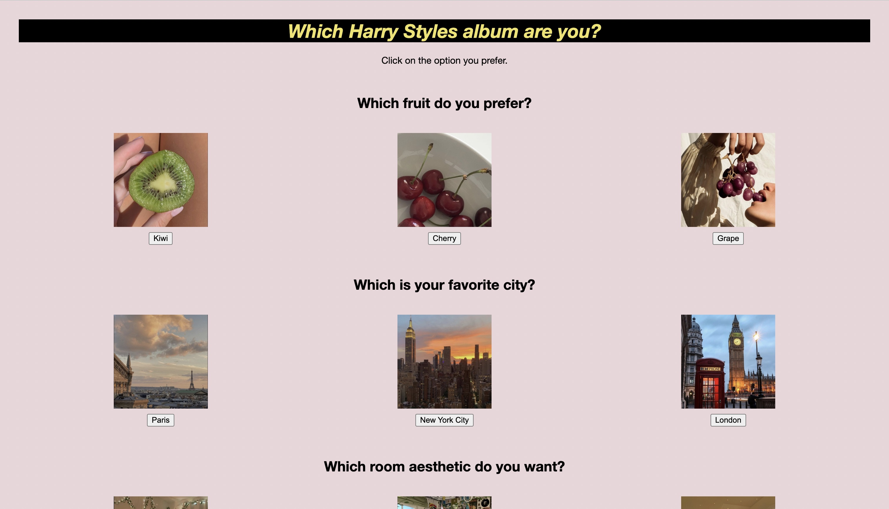

This was the first website I created all about me. It includes a notice into all my favorites with a short description on myself.

This is a soundboard of all my current favorite artsits. Each image you click on will play one song from said artist. I worked on this project Freshman year of highschool.
This project was a personality quiz and it was the first time I had learned to use javascript. I wanted to combine how much I like Harry Styles with this project.

This project was an informative website that I worked on through the girls who code summer program.I had struggled a lot with my header due to the spacing and size of the image.